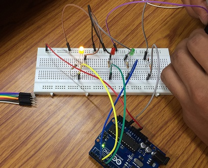

Тестер аккумуляторов и батареек на Arduino
Принцип работы тестера
Батарея подключается желательно с использованием стабилитрона к аналоговому входу A0, который считывает с помощью АЦП напряжение на этой батарее. К цифровым линиям ввода/вывода 3, 4 и 6 через резисторы 220 Ом подключены зеленый, красный и желтый светодиоды соответственно. Они позволяют индицировать уровень заряда. Для каждого уровня можно запрограммировать свои минимальное и максимальное значения напряжения.

Рис. 1 - Тестер аккумуляторов и батареек на макетной плате
Скетч
int greenLed=3; // зеленый светодиод int redLed=4; // красный светодиод int yellowLed=6; // желтый светодиод int analogValue=0; //значение с АЦП float voltage=0; // значение напряжения void setup() { // линии светодиодов настраиваем ны выход pinMode(greenLed,OUTPUT); pinMode(redLed,OUTPUT); pinMode(yellowLed,OUTPUT); } void loop() { analogValue=analogRead(A0); // считываем значение с аналогового входа A0 voltage=0.0048*analogValue; // получаем значение напряжения if(voltage>=1.6) digitalWrite(greenLed,HIGH); // зажигаем зеленый светодиод else if(voltage>1.4 && voltage<1.6) digitalWrite(yellowLed,HIGH); // зажигаем желтый светодиод else if(voltage<=1.4) digitalWrite(redLed,HIGH); // зажигаем красный светодиод delay(50); // задержка 50 мс // сбрасываем линии светодиодов в 0 digitalWrite(redLed,LOW); digitalWrite(yellowLed,LOW); digitalWrite(greenLed,LOW);
Источники
digitrode.ru - Простой тестер аккумуляторов и батареек на Arduino